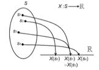
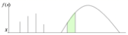
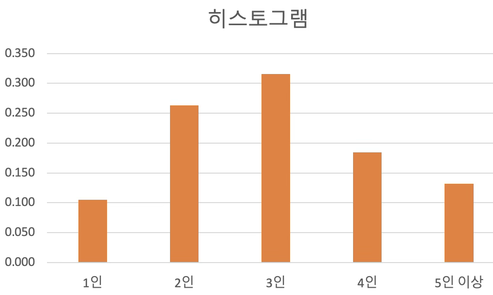
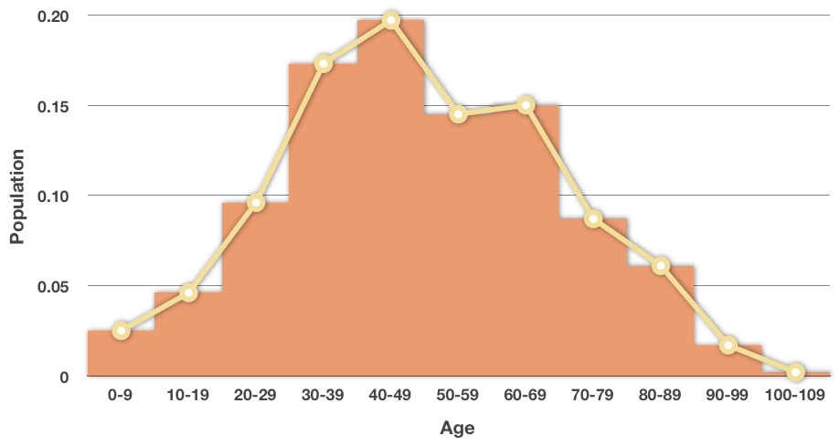
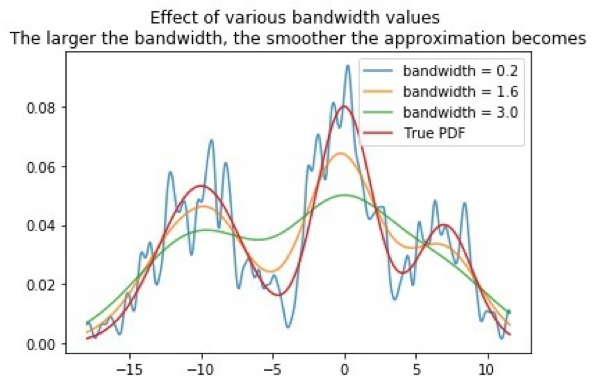
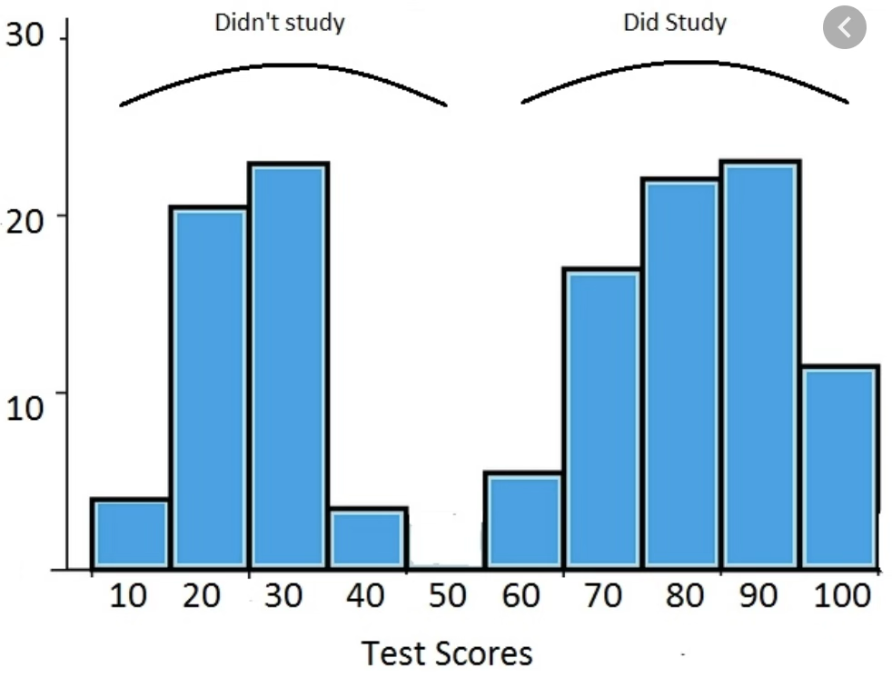
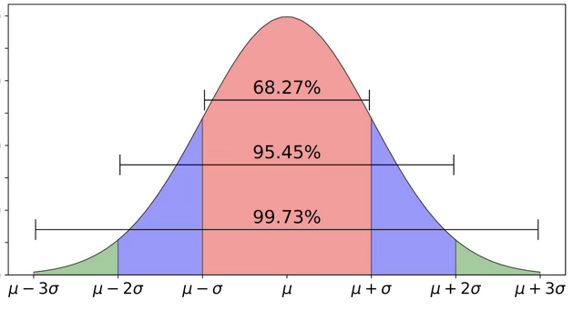

수리 통계 | 2. 확률변수와 확률분포함수
1 확률변수와 확률분포함수
많은 확률 실험에서 원래의 복잡한 표본공간을 직접 다루기보다는, 관심 있는 정보를 요약한 확률변수를 정의하여 문제를 단순화하는 것이 보다 효율적이다.
예를 들어, 하나의 주사위를 10번 던지는 실험을 생각해보자. 표본공간은 \(S = \{(x_1, x_2, \ldots, x_{10}) \mid x_i \in \{1,2,3,4,5,6\}\}\)으로 가능한 결과의 수는 총 \(6^{10}\)개에 이른다. 그러나 관심 있는 양이 단지 “숫자 6이 나온 횟수”라면, 확률변수 \(X\)를 다음과 같이 정의할 수 있다.
\[X = \text{10번 던졌을 때 6이 나온 횟수}\]
이렇게 정의하면 \(X\)는 \(\{0, 1, 2, \ldots, 10\}\)으로 단순화된다. 확률변수는 복잡한 현실 세계의 정보를 수학적으로 구조화하고 요약하는 핵심적인 도구이다.
1.1 확률변수
1.1.1 확률변수 정의
확률변수는 표본공간 \(S\)에서 실수로의 함수이다.
\[P_X(X = x_i) = P(\{s_j \in S : X(s_j) = x_i\})\]

확률변수란 확률실험의 결과, 즉 표본공간의 원소에 실수 값을 대응시키는 함수이다. 보통 확률변수는 \(X, Y, Z\) 등의 알파벳 기호로 나타낸다.
표본공간 \(S = \{s_1, s_2, \ldots, s_n\}\)과 확률함수 \(P\)가 주어졌을 때, 확률변수 \(X\)의 범위(range)를 \(\mathcal{X} = \{x_1, x_2, \ldots, x_m\}\)이라 하면, 새로운 확률함수 \(P_X(x_i) = P(X = x_i)\)를 정의할 수 있다.
공정한 동전을 세 번 던질 때 앞면의 수를 나타내는 확률변수 \(X\):
| 확률실험 | HHH | HHT | HTH | HTT | THH | THT | TTH | TTT |
|---|---|---|---|---|---|---|---|---|
| 확률변수 \(X\) | 3 | 2 | 2 | 1 | 2 | 1 | 1 | 0 |
확률변수 \(X\)의 범위: \(\mathcal{X} = \{0, 1, 2, 3\}\)
표본공간의 8개 점이 각각 확률 \(\frac{1}{8}\)을 가지면:
| \(x\) | 0 | 1 | 2 | 3 |
|---|---|---|---|---|
| \(P_X(X=x)\) | \(1/8\) | \(3/8\) | \(3/8\) | \(1/8\) |
1.1.2 확률변수 종류
수리 통계적 관점에서는 확률변수를 두 가지 유형으로 나눈다.
가능한 값들의 집합이 유한하거나 셀 수 있는 경우. 확률질량함수(PMF)를 통해 각 값에 확률을 정의한다.
| 유형 | 예시 |
|---|---|
| 유한한 이산형 | 두 주사위 눈금의 합: \(\mathcal{X} = \{2, 3, \ldots, 12\}\) |
| 무한한 이산형 | 하루 교통사고 발생 건수: \(\mathcal{X} = \{0, 1, 2, 3, \ldots\}\) |
대표적인 이산형 분포: 베르누이(Bernoulli), 이항(Binomial), 포아송(Poisson)
정의된 임의의 구간 내에서 모든 실수값을 가질 수 있다.
- 특정 값 하나에서의 확률: \(P(X = x) = 0\)
- 구간에 대한 확률은 확률밀도함수(PDF)의 적분으로 계산
대표적인 연속형 분포: 정규분포, 지수분포, 감마분포
| 사례 | 특성 |
|---|---|
| 자동차 연비 (km/L) | 소수점 단위의 연속적 값 |
| 수능 시험 점수 | 정규분포 가정 가능 |
| 항공기 비행 시간 | 임의의 실수값 |
3. 데이터 분석에서의 확률변수 구분
데이터 분석 관점에서 확률변수는 다음과 같이 구분된다.
정량적(Quantitative) 변수
수치적 값을 가지며 산술 연산이 가능한 변수.
- 이산형 예시: 생산량, 자녀 수, 결함 개수
- 연속형 예시: 연봉, 키, 몸무게, 점수, 소득
정성적(Qualitative) 변수
수치적 의미가 없는 범주(categorical)로 구성된 변수. 이산형 확률변수로 분류.
- 명목형(nominal): 성별, 혈액형, 지역
- 순서형(ordinal): 선호도(매우 좋음/보통/나쁨), 만족도(1~5점)
1.2 확률분포함수
1.2.1 분포함수 정의
무작위 확률변수 \(X\)의 누적분포함수(CDF)는 \(F_X(x)\)로 나타내며, 다음과 같이 정의된다.
\[F_X(x) = P(X \leq x)\]
- 확률변수가 연속형이려면 CDF는 연속 함수이어야 한다.
- 확률변수가 이산형이려면 CDF는 계단 함수이어야 한다.
확률변수 \(X\)와 \(Y\)가 동일한 분포를 갖는다는 것은, 모든 집합 \(A \in \mathcal{B}^1\)에 대해 \(P(X \in A) = P(Y \in A)\)가 성립하는 것이다.
이는 모든 \(x\)에 대해 \(F_X(x) = F_Y(x)\)인 것과 동치이다.
1.2.2 CDF 성질
- \(F(x)\)는 비감소(non-decreasing) 함수: \(x_1 < x_2 \Rightarrow F(x_1) \leq F(x_2)\)
- \(F(-\infty) = 0,\quad F(\infty) = 1\)
- 이산형: \(P(X = x) = F(x) - F(x^-)\)
- 연속형: \(F'(x) = f(x)\) (CDF의 미분이 PDF)
1.3 확률밀도함수
1.3.1 확률질량함수
이산형 확률변수 \(X\)의 확률질량함수:
\[p_X(x) = P(X = x) \quad \text{ for all } x\]
4면(1, 2, 3, 4) 주사위 2개를 동시에 던져 큰 수를 확률변수 \(X\)라 하면:
\[p(x) = P(X = x) = \frac{2x-1}{16}, \quad x = 1, 2, 3, 4\]
| \(x\) | 1 | 2 | 3 | 4 |
|---|---|---|---|---|
| \(p(x)\) | \(1/16\) | \(3/16\) | \(5/16\) | \(7/16\) |
| \(F(x)\) | \(1/16\) | \(4/16\) | \(9/16\) | \(16/16\) |
앞면이 나올 확률이 \(p\)인 동전에서 “앞면이 처음 나올 때까지 던진 횟수”를 \(X\)로 정의하면:
\[P(X = x) = (1-p)^{x-1}p, \quad x = 1, 2, \ldots\]
누적분포함수: \[F_X(x) = P(X \leq x) = \sum_{i=1}^{x}(1-p)^{i-1}p = 1 - (1-p)^x, \quad x = 1, 2, 3, \ldots\]
1.3.2 확률밀도함수
연속형 확률변수 \(X\)의 확률밀도함수 \(f_X(x)\)는 다음 조건을 만족하는 함수이다.
\[F_X(x) = \int_{-\infty}^{x} f_X(t)\, dt \quad \text{ for all } x\]
즉, \(\dfrac{d}{dx} F_X(x) = f_X(x)\)이다.
1.3.3 확률계산
- 이산형: \(P(X = x) = F_X(x) - F_X(x^-)\)

- 연속형: \(P(a < X < b) = F_X(b) - F_X(a)\)

1.3.4 확률밀도함수 관련 정리
함수 \(f_X(x)\) 또는 \(p_X(x)\)가 확률변수 \(X\)의 PDF 또는 PMF가 되기 위한 필요충분조건:
- \(f_X(x) \geq 0 \text{ for all } x\)
- \(\displaystyle\int_{-\infty}^{\infty} f_X(x)\, dx = 1\) (연속형) 또는 \(\displaystyle\sum_{x} p_X(x) = 1\) (이산형)
2 데이터 확률밀도함수
데이터로부터 확률밀도함수를 추정하는 대표적인 방법으로는 히스토그램(histogram)과 커널 밀도 추정(KDE)이 있다.
- 히스토그램: 데이터를 구간으로 나누고 상대도수로 표현
- KDE: 각 데이터 지점에 커널 함수를 적용하여 매끄러운 밀도 추정
2.1 확률모형
확률모형이란 확률변수의 PDF 또는 PMF를 의미한다.
- 이산형: 막대그래프 형태, 각 막대의 높이 = 해당 값의 확률
- 연속형: 곡선 아래 면적 = 확률. 특정 점의 확률은 \(P(X = x) = 0\)이므로, 구간 \(P(a \leq X \leq b)\)에 대해 확률을 정의한다.

모집단 확률분포함수 \(f(x)\) 가정
모집단 분포를 이론적으로 가정한 뒤, 통계량의 샘플링 분포를 구하여 분석을 수행한다.
- 오차항이 정규분포를 따른다고 가정하면 회귀계수 검정통계량은 \(t\)-분포를 따른다.
- 모형 전체의 유의성 검정에는 \(F\)-분포를 사용한다.
- 소표본(\(n < 30\))에서는 정규분포 가정 하에 표본평균이 \(t\)-분포를 따른다.
모집단 확률분포함수 가정이 불가능한 경우
- 적합성 검정(Goodness-of-fit test): 카이제곱(\(\chi^2\)) 검정으로 관측빈도와 기대빈도 비교
- 그래프 기반 방법
- P-P plot: 누적상대도수 vs. 이론적 누적분포 비교
- Q-Q plot: 분위수 비교 — 직선에 가까울수록 분포가 유사
- 히스토그램, KDE 그래프로 분포 형태 시각적 확인
- 경험적 판단(rule of thumb): 좌우 대칭이고 중심이 뚜렷하면 정규분포 가정 가능
2.2 히스토그램
2.2.1 이산형 데이터
이산형 데이터의 히스토그램은 가로축(확률변수 값), 세로축(확률)으로 구성된다. 상대빈도가 각 값의 확률을 나타내며, 바차트(bar chart)라고도 불린다.


2.2.2 연속형 데이터
연속형 데이터는 데이터 범위를 일정한 폭의 구간으로 나누어 히스토그램을 작성한다. 각 구간 중앙값을 연결하면 확률분포의 형태를 추정할 수 있다.

- 데이터 범위 계산: \(\text{범위} = \text{최대값} - \text{최소값}\)
- 빈(bin) 개수 결정 (일반적으로 8~12개). Sturges 규칙: \(K = 1 + 3.322\log_{10}(N)\)
- 전체 범위 ÷ 빈 개수로 구간 폭(interval width) 결정
- 각 구간의 도수 및 상대빈도 계산
- 막대그래프로 표현
2.3 Kernel 추정
유한개의 표본 데이터를 이용하여 모집단 PDF를 매끄럽게 추정하는 방법이다. 신호처리 분야에서는 Parzen-Rosenblatt window 방법이라 부른다.
KDE는 각 관측값에 커널 함수를 중심으로 확률밀도를 부여하고, 이를 합산하여 연속적인 밀도함수를 생성한다.
커널함수 \(K(x)\)는 \(\int_{-\infty}^{\infty} K(x)\, dx = 1\)을 만족하는 비음수, 좌우 대칭인 함수이다.
| 커널 유형 | 공식 |
|---|---|
| Gaussian | \(K(x;h) \propto e^{-x^2/(2h^2)}\) |
| Epanechnikov | \(K(x;h) \propto 1 - x^2/h^2\) |
| Linear | \(K(x;h) \propto 1 - x/h, \quad x < h\) |
확률표본 \(x_1, x_2, \ldots, x_n\)이 주어진 경우:
\[\hat{f}_h(x) = \frac{1}{n}\sum_{i=1}^{n} K_h(x - x_i) = \frac{1}{nh}\sum_{i=1}^{n} K\!\left(\frac{x - x_i}{h}\right)\]
\(h\)는 bandwidth 모수. \(h\)가 크면 완만한 형태, 작으면 뾰족한 형태가 된다.
최적 bandwidth (Silverman’s rule of thumb): \[h = \left(\frac{4\hat{\sigma}^5}{3n}\right)^{1/5} \approx 1.06\, \hat{\sigma}\, n^{-0.2}\]

2.4 봉우리
확률분포함수에서 발생 확률이 높은 구간은 봉우리로 나타나며, 그 중 가장 높은 봉우리에 해당하는 확률변수 값을 최빈값(mode)이라고 한다.
| 유형 | 설명 | 예 |
|---|---|---|
| 단봉(unimodal) | 봉우리가 하나 | 정규분포 |
| 쌍봉(bimodal) | 봉우리가 두 개 | 두 이질적 집단이 혼재 |
| 다봉(multimodal) | 세 개 이상 | 여러 집단의 혼합 |
이봉(bimodal) 분포에서 단순 평균 추론은 다음과 같은 문제를 야기한다.
- 대표성 부족: 평균이 두 봉우리 사이에 위치하여 실제 데이터가 거의 없는 구간을 대표값으로 제시
- 왜곡된 해석: 두 모집단 특성이 하나의 평균에 뭉개짐
- 분산 증가: 전체 분산이 커지고 신뢰구간이 넓어져 추론 정확성 저하
- 정규성 위반: t-검정, ANOVA 등의 정규성 가정 불충족
- 혼합 모집단: 하위 집단별 평균을 개별 추정하는 것이 더 적절
쌍봉 분포 데이터에는 군집 분석, 혼합분포 모형(Gaussian Mixture Model), 또는 중앙값 활용을 권장한다.
2.5 치우침
2.5.1 정의
종 모양(bell-shaped)이며 좌우 대칭인 분포는 평균, 중앙값, 최빈값이 모두 같은 위치에 존재한다(정규분포).
| 분포 형태 | 특징 | 예 |
|---|---|---|
| 우측 치우침(positive skewed) | 오른쪽 꼬리가 길고, 평균 > 중앙값 | 소득, 부동산 가격 |
| 대칭(symmetric) | 평균 = 중앙값 = 최빈값 | 정규분포 |
| 좌측 치우침(negative skewed) | 왼쪽 꼬리가 길고, 평균 < 중앙값 | 대부분 높은 점수 분포 |
2.5.2 치우침과 중앙 위치 통계량 관계

| 중심 척도 | 정의 | 특징 |
|---|---|---|
| 평균(mean) | 전체 값의 가중 합 | 이상치 영향 큼 |
| 중앙값(median) | 크기 순서 중 중앙값 | 이상치 영향 적음 |
| 최빈값(mode) | 가장 자주 나타나는 값 | 이산형·다봉 분포에 유용 |
정규분포: 세 척도 모두 같은 위치. 비대칭 분포: 평균이 극단값에 끌려 중앙값·최빈값과 차이 발생.
2.5.3 치우침 척도
평균 기반 왜도 (Moment-based) \[\text{Skewness} = E\left[\left(\frac{X-\mu}{\sigma}\right)^3\right] = \frac{\mu_3}{\sigma^3}\] 정규분포의 왜도 = 0, 지수분포의 왜도 = 2 (강한 우측 치우침)
중앙값 기반 척도 (Pearson) - First Skewness: \(\text{skew} = \dfrac{\text{mean} - \text{mode}}{\text{std}}\) - Second Skewness: \(\text{skew} = \dfrac{3(\text{mean} - \text{median})}{\text{std}}\)
사분위 기반 Bowley’s Skewness (이상치 영향 적음) \[\text{skew} = \frac{Q_3 + Q_1 - 2Q_2}{\text{IQR}}\]
Groeneveld & Meeden’s Coefficient \[\text{skew} = \frac{\text{mean} - \text{median}}{E(|X - \text{median}|)}\]
2.5.4 치우침 판단 기준
| Pearson 2차 | 분포 형태 | Bowley’s | Groeneveld & Meeden’s |
|---|---|---|---|
| \(= 0\) | 대칭 분포 | \(= 0\) | \(= 0\) |
| \(0 < \text{skew} < 0.5\) | 거의 대칭 | \(0 < \text{skew} < 0.25\) | \(0 < \text{skew} < 0.1\) |
| \(0.5 \leq \text{skew} < 1.0\) | 약한 우측 치우침 | \(0.25 \leq \text{skew} < 0.5\) | \(0.1 \leq \text{skew} < 0.3\) |
| \(\geq 1.0\) | 강한 우측 치우침 | \(\geq 0.5\) | \(\geq 0.3\) |
| \(-0.5 < \text{skew} < 0\) | 약한 좌측 치우침 | \(-0.25 < \text{skew} < 0\) | \(-0.1 < \text{skew} < 0\) |
| \(-1.0 < \text{skew} \leq -0.5\) | 중간 정도 좌측 치우침 | \(-0.5 < \text{skew} \leq -0.25\) | \(-0.3 < \text{skew} \leq -0.1\) |
| \(\leq -1.0\) | 강한 좌측 치우침 | \(\leq -0.5\) | \(\leq -0.3\) |
2.6 확률밀도함수 관련 법칙
2.6.1 실증적 법칙 (Empirical Rule)
PDF가 벨 모양 좌우 대칭이고 평균 \(\mu\), 표준편차 \(\sigma\)를 가지면:
\[P(|X - \mu| < k\sigma) \geq \alpha\]
| \(k\) | 구간 | 포함 비율(\(\alpha\)) |
|---|---|---|
| 1 | \((\mu - \sigma,\, \mu + \sigma)\) | 적어도 68% |
| 2 | \((\mu - 2\sigma,\, \mu + 2\sigma)\) | 적어도 95% |
| 3 | \((\mu - 3\sigma,\, \mu + 3\sigma)\) | 적어도 99.8% |
| 6 | \((\mu - 6\sigma,\, \mu + 6\sigma)\) | 100만개 중 2개만 이탈 (\(6\sigma\) 품질운동) |

2.6.2 Chebyshev 부등식
평균 \(\mu\), 표준편차 \(\sigma\)를 갖는 확률변수 \(X\)의 PDF 형태를 알 수 없는 경우에도 성립한다.
\[P(|X - \mu| < k\sigma) \geq 1 - \frac{1}{k^2}\]
- \(k = 2\): 평균 \(\pm 2\sigma\) 구간에 적어도 75% 포함
- \(k = 3\): 평균 \(\pm 3\sigma\) 구간에 적어도 89% 포함
#데이터 읽기 (연속형 데이터)
import pandas as pd
data = pd.read_csv('https://vincentarelbundock.github.io/Rdatasets/csv/fpp2/ausair.csv')
data.info()#상대빈도표
import numpy as np
pd.cut(data['value'], np.arange(0, 80, 10)).value_counts() / len(data)(10, 20] 0.361702
(30, 40] 0.148936
(60, 70] 0.127660
(20, 30] 0.106383
(40, 50] 0.106383
(0, 10] 0.085106
(50, 60] 0.042553#확률밀도함수, KDE
import matplotlib.pyplot as plt
df = pd.DataFrame(data, columns=['value'])
ax = df.plot.hist(bins=10)
df.plot.kde(ax=ax, secondary_y=True, bw_method=0.3)
plt.show()
#CDF, PDF 그리기
import matplotlib.pyplot as plt
fig, ax = plt.subplots()
ax2 = ax.twinx()
n, bins, patches = ax.hist(data['value'], bins=10)
n, bins, patches = ax2.hist(data['value'], cumulative=1, histtype='step', bins=10, color='tab:orange')
plt.show()
3 변수변환
모집단을 누적분포함수를 가진 확률변수 \(X\)로 모델링하면, \(X\) 자체뿐만 아니라 \(g(X)\)의 분포 특성에도 관심을 갖게 된다.
3.1 개념
확률변수 \(X\)의 임의의 함수 \(g(X)\)도 확률변수가 된다. 새로운 확률변수 \(Y = g(X)\)로 표기하며, 임의의 집합 \(A\)에 대하여:
\[P(Y \in A) = P(g(X) \in A)\]
\(y = g(x)\)에서 함수 \(g\)는 \(\mathcal{X} \to \mathcal{Y}\)의 매핑을 정의한다. 역함수 매핑 \(g^{-1}\)은 \(\mathcal{Y}\)의 부분집합을 \(\mathcal{X}\)의 부분집합으로 변환한다.
\[g^{-1}(A) = \{x \in \mathcal{X} : g(x) \in A\}\]
확률변수 \(Y = g(X)\)와 임의의 집합 \(A \subset \mathcal{Y}\)에 대해:
\[P(Y \in A) = P(g(X) \in A) = P(X \in g^{-1}(A))\]
3.2 이산형 확률변수 변수변환
확률변수 \(X\)가 이산 확률변수라면 \(Y = g(X)\)도 이산 확률변수이다. PMF는 다음과 같이 주어진다.
\[f_Y(y) = P(Y = y) = \sum_{x \in g^{-1}(y)} f_X(x), \quad y \in \mathcal{Y}\]
확률변수 \(X\)를 첫 번째 앞면이 나온 던지기 횟수로 정의: \(P(X = x) = (1/2)^x,\ x = 1, 2, \ldots\)
앞면이 나오기 전까지의 던진 횟수 \(Y = g(X) = X - 1\):
- 역함수: \(g^{-1}(y) = y + 1\)
- 표본공간: \(\mathcal{Y} = \{0, 1, 2, \ldots\}\)
- PMF: \(p_Y(y) = p_X(y+1) = \left(\dfrac{1}{2}\right)^{y+1}, \quad y = 0, 1, 2, \ldots\)
이산 확률변수 \(X \sim \text{Binomial}(n, p)\):
\[f_X(x) = \binom{n}{x} p^x (1-p)^{n-x}, \quad x = 0, 1, \ldots, n\]
\(Y = g(X) = n - X\) (실패 횟수)의 PMF를 구하면:
- 역함수: \(g^{-1}(y) = n - y\)
- 표본공간: \(\mathcal{Y} = \{0, 1, \ldots, n\}\)
\[p_Y(y) = \binom{n}{y}(1-p)^y p^{n-y}\]
즉, \(Y \sim \text{Binomial}(n,\ 1-p)\)이다.
3.3 연속형 확률변수 변수변환
3.3.1 분포함수 이용하기
확률변수 \(Y = g(X)\)의 CDF:
\[F_Y(y) = P(Y \leq y) = P(g(X) \leq y) = \int_{\{x \in \mathcal{X} : g(x) \leq y\}} f_X(x)\, dx\]
\(f_X(x) = \dfrac{1}{2},\quad -1 < x < 1\)에서 \(Y = X^2\)의 PDF를 구하라.
- 표본공간: \(\mathcal{Y} = \{y : 0 \leq y < 1\}\)
- CDF:
\[F_Y(y) = \begin{cases} 0 & y < 0 \\ \displaystyle\int_{-\sqrt{y}}^{\sqrt{y}} \frac{1}{2}\, dx = \sqrt{y} & 0 \leq y < 1 \\ 1 & 1 \leq y \end{cases}\]
- PDF:
\[f_Y(y) = \begin{cases} \dfrac{1}{2\sqrt{y}} & 0 < y < 1 \\ 0 & \text{그 외} \end{cases}\]
3.3.2 Jacobian 이용하기
\(X\)가 PDF \(f_X(x)\)를 가지는 연속 확률변수이고 \(Y = g(X)\)에서 \(g(x)\)가 일대일 미분 가능 함수일 때:
\(g(X)\)의 역함수를 \(x = g^{-1}(y)\)라 하면:
\[f_Y(y) = f_X(g^{-1}(y)) \left|\frac{dx}{dy}\right|, \quad y \in S_Y\]
CDF를 통한 표현:
- \(g(X)\)가 증가 함수: \(F_Y(y) = F_X(g^{-1}(y))\)
- \(g(X)\)가 감소 함수: \(F_Y(y) = 1 - F_X(g^{-1}(y))\)
\(X \sim f(x) = 1,\quad 0 < x < 1\)에서 \(Y = -\ln(1-X)\)의 PDF를 구하라.
- \(Y = -\ln(1-X)\)는 \(X\)의 증가 함수이고, 역함수: \(X = 1 - e^{-y}\)
- \(\dfrac{dx}{dy} = e^{-y}\)
- \(Y\)의 영역: \(0 \leq x \leq 1 \Rightarrow 0 < y < \infty\)
- \(f_Y(y) = f_X(x)\left|\dfrac{dx}{dy}\right| = e^{-y},\quad 0 < y\)
즉, \(Y \sim \text{Exp}(1)\)이다.
\(X \sim N(0,1)\)에서 \(Y = X^2\)의 PDF를 구하라.
\[f_X(x) = \frac{1}{\sqrt{2\pi}} e^{-x^2/2}, \quad -\infty < x < \infty\]
구간 \(A_1 = (-\infty, 0)\)과 \(A_2 = (0, \infty)\)로 분할:
\[f_Y(y) = \frac{1}{\sqrt{2\pi}} e^{-y/2} \left|\frac{-1}{2\sqrt{y}}\right| + \frac{1}{\sqrt{2\pi}} e^{-y/2} \left|\frac{1}{2\sqrt{y}}\right| = \frac{1}{\sqrt{2\pi}} \frac{1}{\sqrt{y}} e^{-y/2}, \quad 0 < y < \infty\]
이는 자유도 1의 카이제곱 분포이다.
4 기대값
확률밀도함수는 분포 형태를 보여주지만, 중심 경향과 같은 요약 정보를 직접 제공하지는 않는다. 이러한 요약 정보를 수치로 표현한 것을 기술 요약값(descriptive summary statistics)이라 하며, 대표적인 예가 기대값(expected value)이다.
기대값은 각 값이 발생할 확률을 고려한 가중 평균이다.
4.1 기대값 정의
확률변수 \(g(X)\)의 기대값:
\[E[g(X)] = \begin{cases} \displaystyle\int_{-\infty}^{\infty} g(x) f_X(x)\, dx & X \text{ 가 연속형} \\[6pt] \displaystyle\sum_{x \in \mathcal{X}} g(x) f_X(x) & X \text{ 가 이산형} \end{cases}\]
단, \(E|g(X)| = \infty\)이면 기대값이 존재하지 않는다.
\(f_X(x) = \dfrac{1}{\lambda}e^{-x/\lambda},\quad 0 \leq x < \infty\)에서:
\[E[X] = \int_0^{\infty} \frac{1}{\lambda} x\, e^{-x/\lambda}\, dx = \lambda\]
\(X \sim \text{Binomial}(n, p)\):
\[P_X(x) = \binom{n}{x} p^x (1-p)^{n-x}, \quad x = 0, 1, \ldots, n\]
\(x\binom{n}{x} = n\binom{n-1}{x-1}\)를 이용하여:
\[E[X] = \sum_{x=0}^{n} x \binom{n}{x} p^x (1-p)^{n-x} = np \sum_{y=0}^{n-1} \binom{n-1}{y} p^y (1-p)^{n-1-y} = np\]
4.2 주요 기대값
- 평균: \(\mu = E(X)\)
- 분산: \(\sigma^2 = \text{Var}(X) = E[(X-\mu)^2] = E(X^2) - \mu^2\)
- 표준편차: \(\sigma = \sqrt{\text{Var}(X)}\)
- 성질: \(\text{Var}(aX + b) = a^2\, \text{Var}(X)\)
\[\text{Skewness} = E\left[\left(\frac{X-\mu}{\sigma}\right)^3\right]\]
- \(= 0\): 분포가 완전히 대칭 (정규분포)
- \(> 0\): 오른쪽 꼬리가 길다 (positive skewed)
- \(< 0\): 왼쪽 꼬리가 길다 (negative skewed)
\[\text{Kurtosis} = E\left[\left(\frac{X-\mu}{\sigma}\right)^4\right] - 3\]
- \(= 0\): 정규분포와 동일한 꼬리 두께
- \(> 0\) (leptokurtic): 꼬리가 두껍고 중심이 뾰족 — 이상치 빈번
- \(< 0\) (platykurtic): 꼬리가 얇고 중심이 평평
- \(n\)차 적률: \(\mu_n' = E[X^n]\)
- \(n\)차 중심적률: \(\mu_n = E[(X-\mu)^n]\)
\[M_X(t) = E[e^{tX}]\]
\(-h < t < h\)인 어떤 \(h > 0\)에 대해 \(E[e^{tX}]\)가 존재하면 MGF가 존재한다.
주요 정리:
\(E[X^n] = M_X^{(n)}(0)\) — \(n\)차 적률은 MGF의 \(n\)차 도함수를 \(t=0\)에서 계산한 값
\(F_X(z) = F_Y(z)\) for all \(z\) \(\Longleftrightarrow\) \(M_X(t) = M_Y(t)\) for all \(t \in (-h, h)\) for some \(h > 0\)
즉, 두 확률변수의 MGF가 일치하면 동일한 확률분포를 따른다.
모수 \((\alpha, \beta)\)인 감마분포의 PDF:
\[f(x) = \frac{1}{\Gamma(\alpha)\beta^{\alpha}} x^{\alpha-1} e^{-x/\beta}, \quad 0 < x < \infty,\quad \alpha > 0,\, \beta > 0\]
적률생성함수:
\[M_X(t) = \left(\frac{1}{1 - \beta t}\right)^{\alpha}, \quad t < \frac{1}{\beta}\]
평균:
\[E[X] = \left.\frac{d}{dt} M_X(t)\right|_{t=0} = \frac{\alpha\beta}{(1-\beta t)^{\alpha+1}}\bigg|_{t=0} = \alpha\beta\]
\(X \sim \text{Binomial}(n, p)\):
\[M_X(t) = \sum_{x=0}^{n} e^{tx} \binom{n}{x} p^x (1-p)^{n-x} = [pe^t + (1-p)]^n\]
\[E[X] = \left.\frac{d}{dt} M_X(t)\right|_{t=0} = np e^t [pe^t + (1-p)]^{n-1}\bigg|_{t=0} = np\]
4.3 기대값 관련 정리 및 부등식
\(X\)를 확률변수, \(a, b, c\)를 상수, \(g_1(x)\)와 \(g_2(x)\)를 기댓값이 존재하는 함수라 하자.
- 선형성: \(E(ag_1(X) + bg_2(X) + c) = aE[g_1(X)] + bE[g_2(X)] + c\)
- 비음성: \(g_1(x) \geq 0\) for all \(x\) 이면, \(E[g_1(X)] \geq 0\)
- 단조성: \(g_1(x) \geq g_2(x)\) 이면, \(E[g_1(X)] \geq E[g_2(X)]\)
- 유계성: \(a \leq g_1(x) \leq b\) 이면, \(a \leq E[g_1(X)] \leq b\)
차수 관계: \(E[X^m]\)이 존재하면, \(k \leq m\)인 양의 정수 \(k\)에 대해 \(E[X^k]\)도 존재한다.
(Markov’s Inequality) \(u(X)\)를 비음수 함수라 하면, 모든 양의 상수 \(c\)에 대해:
\[P[u(X) \geq c] \leq \frac{E[u(X)]}{c}\]
(Chebyshev’s Inequality) 확률변수 \(X\)가 유한한 분산 \(\sigma^2\)를 가지면, 모든 \(k > 0\)에 대해:
\[P(|X - \mu| < k\sigma) \geq 1 - \frac{1}{k^2}\]